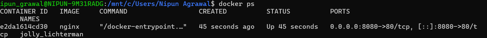
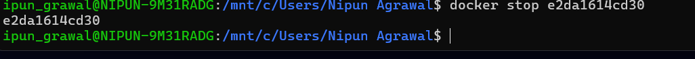

Experiment 2
Docker Installation, Configuration, and Running Images
Name: Nipun Agrawal
Roll No: R2142230048
SAP ID: 500119472
University: UPES Dehradun
Screenshots




Aim
To install Docker, pull images, run containers, and manage container lifecycle.
Objectives
- Pull Docker images from Docker Hub
- Run containers with port mapping
- Verify running containers
- Manage container lifecycle
Theory
Docker is a containerization platform that packages applications with dependencies into containers. Containers are lightweight and faster than virtual machines.
A Docker Image is a template. A Docker Container is a running instance of that image.
Software Requirements
- Windows OS
- Docker Desktop (WSL)
- Ubuntu
Procedure
Step 1: Pull Docker Image
docker pull nginx
This downloads the Nginx image from Docker Hub.
Step 2: Run Container
docker run -d -p 8080:80 nginx
- -d → Background mode
- -p → Port mapping
Step 3: Verify Containers
docker ps
Step 4: Stop & Remove Container
docker stop <container_id>
docker rm <container_id>
Step 5: Remove Image
docker rmi nginx
This deletes the image and frees space.
Result
Docker images were pulled, containers executed, and lifecycle commands were performed successfully.
Conclusion
Docker provides a lightweight and efficient environment for application deployment.
Viva Questions
- What is a Docker image?
- What is a container?
- Difference between docker run and docker start?
- Why port mapping is used?
- Why containers are lightweight?
Overall Conclusion
Containers are faster and efficient for deployment, while VMs provide stronger isolation.